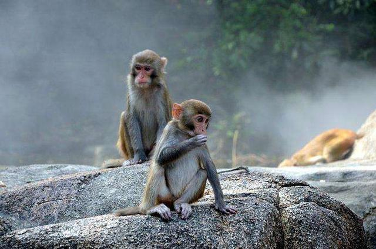
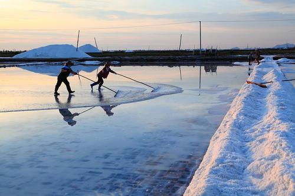
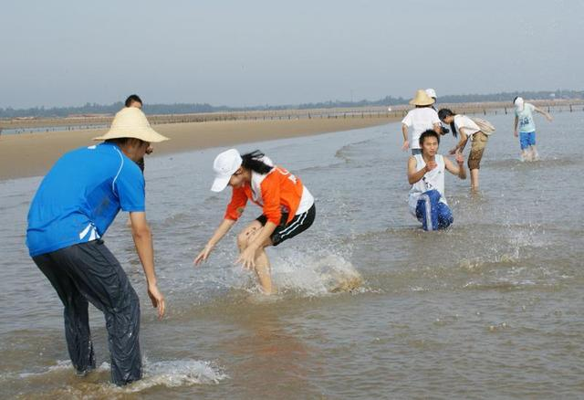

Reading planning
Books are the precious spiritual wealth of mankind, reading is an important way for people to learn, is the navigation lamp of life struggle, is the channel of cultural inheritance, and is the ladder of human progress. Sukhomlinsky said: "To read books every day, to be friends with books all your life, this is a babbling brook that cannot be broken for a day, it enriches the mind." Through the study of the classic theories of education, we use new ideas and new concepts to guide and reflect on our own education and teaching, constantly update our educational concepts, enrich our own humanistic connotations, and strengthen our own self-cultivation. Establish a correct world outlook, outlook on life, values and teachers' professional outlook, and carry out educational innovation. Improve the theoretical and practical level, improve the innovation ability of education and teaching and the ability of education and scientific research, promote curriculum reform, be competent for teaching new courses, and become a full of vitality and vitality of primary school teachers who meet the requirements of quality education. Therefore, carrying out reading activities among the majority of teachers can greatly improve the professional and theoretical quality of teachers and cultivate a perfect reading personality. In response to the call for the "Grow Together with One Book" campaign, a personal reading plan was developed.
1. Create a positive and enterprising reading atmosphere and study hard, improve their enthusiasm for learning theories, and gradually develop the habit of reading more books and reading good books. ...
Strive to improve the level of theory and practice, increase the wisdom of teaching, promote the process of curriculum reform, and comprehensively improve the quality and efficiency of education and teaching.

Strifto Impreft Leville Bensiolian de Practis, Inchrist Wesdem Benti, Promot Prosets Ben Kurulum Refum, André Revli Imprevet Hensivli Impreti Ande Ephisinsyen Edukadion Andeti.

Carry forward the scientific spirit and humanistic spirit, and highlight the humanity on the basis of attaching importance to science;
Kalifurvodeschti Fichispirit Andhumannititispirther, AndrehelitHumanititiente, AndrehelitHumanitiente Bassben Ataimpotan Storzczchens;
